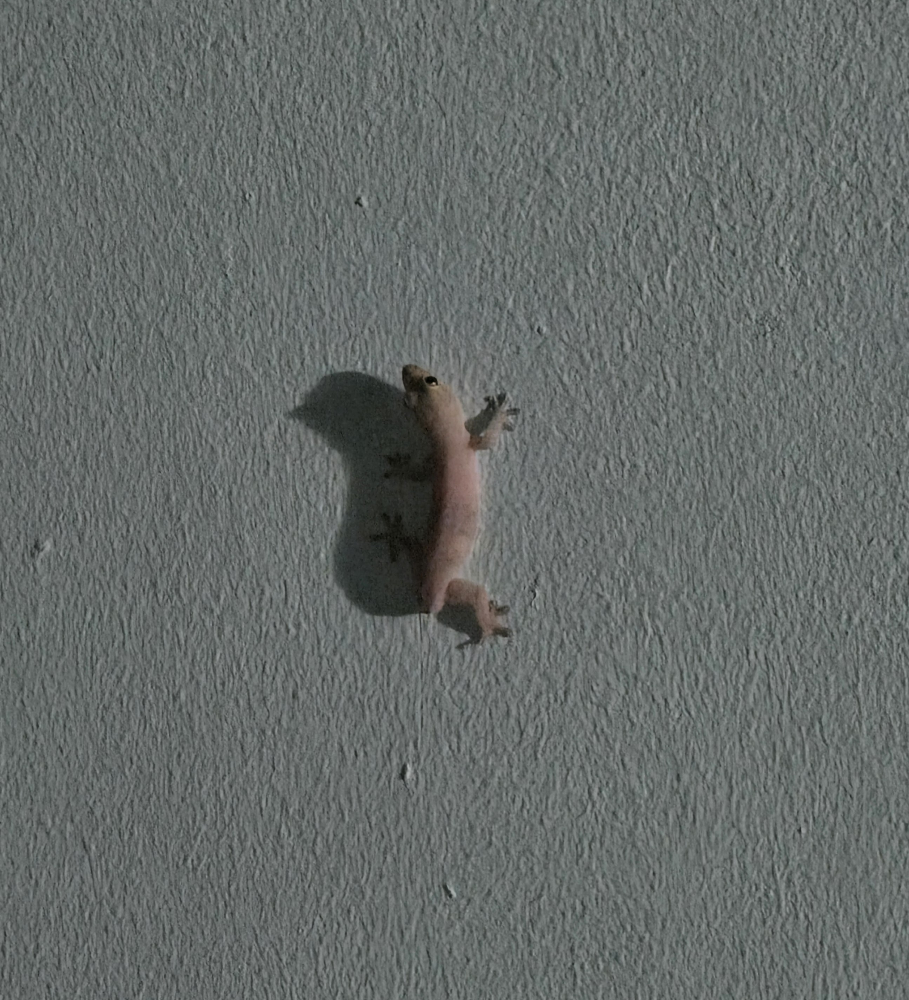
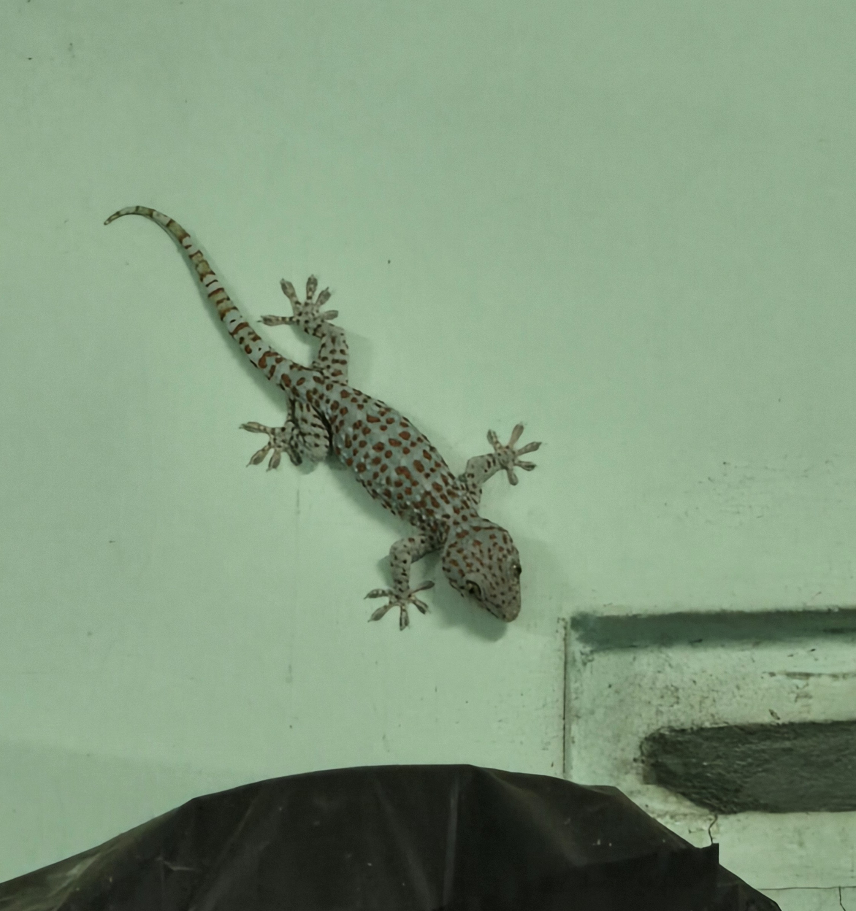
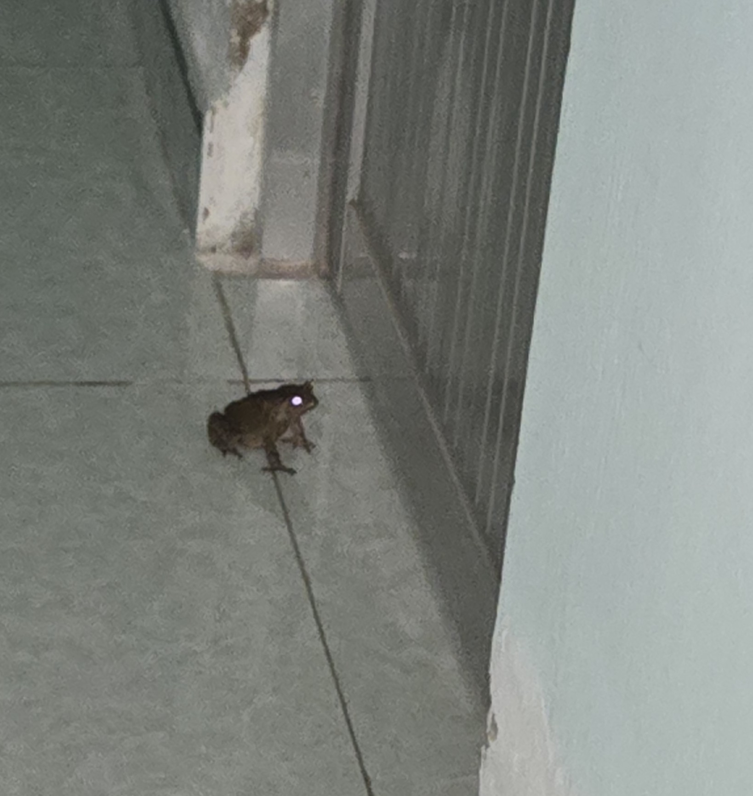

En plus de tout ce petit monde, nous avons également une population non-invitée, ce sont les différents reptiles.

Les lézards sont les reptiles qu'il est le plus commun de croiser, peut importe l'heure. Celui de le photo ci-dessus a perdu une bataille contre un camarades, il a perdu sa queue dans sa chute. En effet, ces petits amis se baladent sur les murs, et font de leur mieux pour nous débarasser des différents insectes qui ne sont pas les bienvenus.
Parfois, certains de ces insectes sont un peu trop grand pour ces lézards, heureusement, nous avons aussi des geckos pour les aider.

Bien qu'il puissent faire peur, ils sont innofensifs tant qu'on ne leur fait rien, et plus d'une fois m'ont ils débarassé de cafards, et pour cela, je serais toujours ravie de savoir qu'ils cohabitent avec moi.
Enfin, il n'est pas rare de se retrouver nez à nez avec un crapaud, que ce soit à l'extérieur, ou à l'intérieur.

Ces petites créatures ne vous feront aucun mal, si ce n'est de vous surprendre dans la salle de bain. Ne lui faites rien, et il trouvera lui même son chemin vers la sortie.